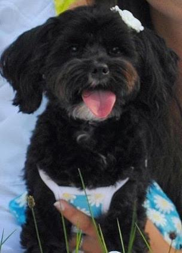

| Characteristics of Brinkley | |
|---|---|
| Height | 10 inches |
| Weight | 8 pounds |
| Eye Color | Brown |
| Behavior | Loves running, playing, and sleeping |
| Life Span | 12-15 years |
Brinkley has interesting qualities. When she gets super excited, she shakes her whole back side rather than just her tail. If the person who her excited walks towards her, she will slowly walk away and then roll over for a belly rub. Also, she loves human food. Brinkley is so spoiled that she takes food from my hand super softly. She knows that she will get food so she does not bother trying to rush to get food from my hand.
